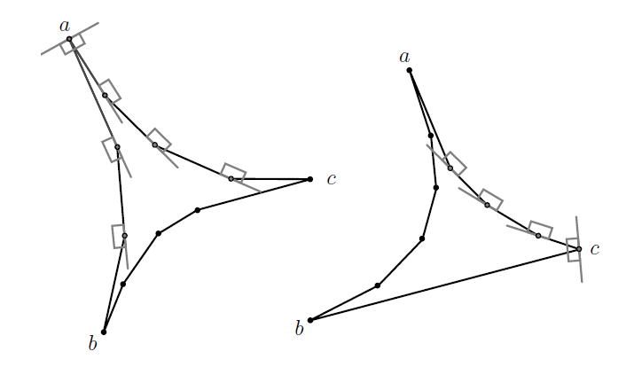
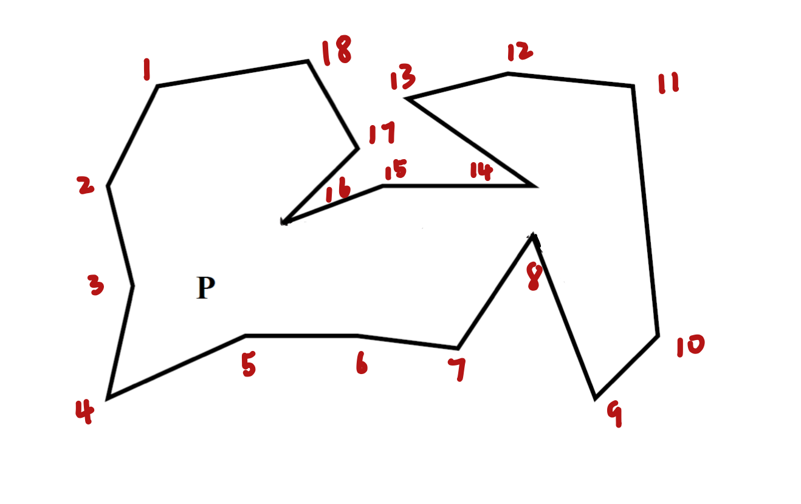
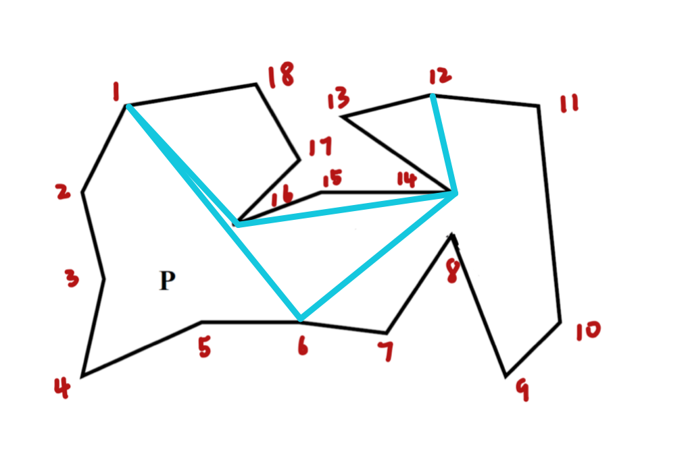
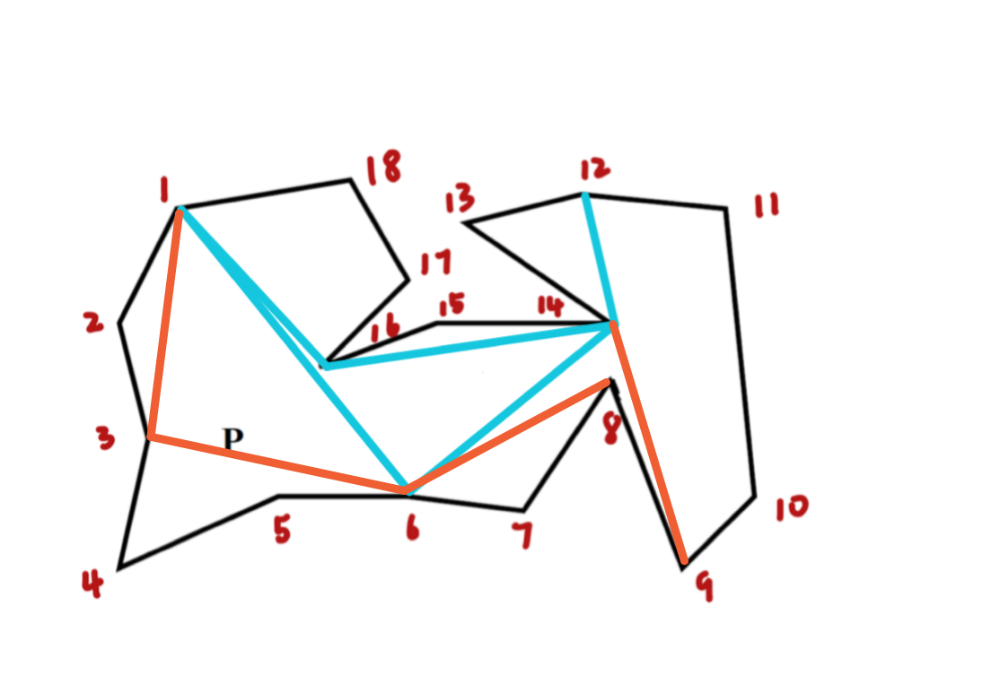
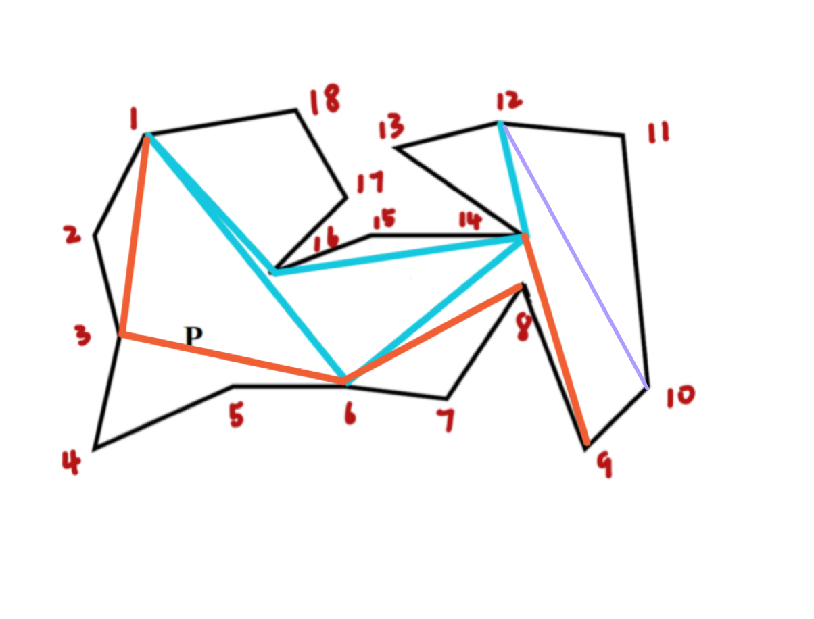
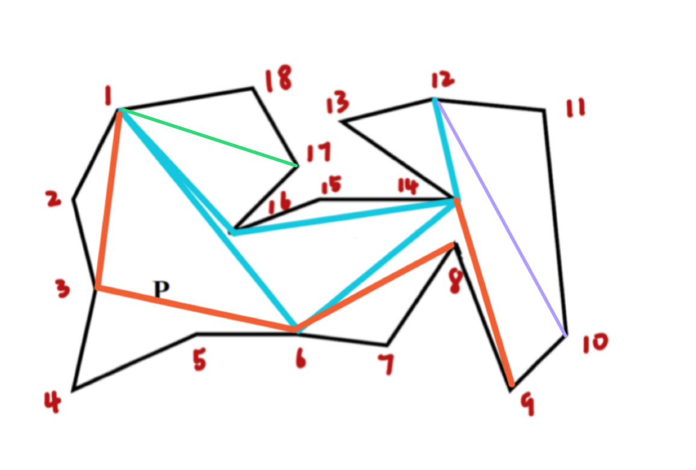

In this project, we design an interactive tutorial to study the upper bound of illuminating a simple polygon with $n$ vertices, $k$ of which are convex, using edge-aligned vertex pi-floodlight.
Usually, a partition of the space into convex regions, each of which is visible by one guard, allows one to use a combinatorial argument on a finite set of possible guard locations.
In contrast, our allocation of guards is based on a decomposition of a simple polygon into pseudo-triangles—planar polygons with exactly three convex vertices [1]. Applet
In this part, we introduce some definitions which have been or will be used in this project.
(1) The range of illumination of each floodlight is restricted to $π$.
(2) The floodlights are placed at the vertices of the polygon.
The floodlights which satisfy (1)(2) are called vertex pi-floodlight. A vertex pi-floodlight is given by a pair $\left(v, H^{v}\right)$ where $v$ is a vertex of polygon $P$ and $H^v$ is a closed half-plane such that $v$ is on the boundary of $H^v$.
A pi-floodlight $\left(v, H^{v}\right)$ illuminates $a \in P$ if and only if the closed line segment $va$ is in $P \cap H^{v}$.
It is obvious that a pi-floodlight at a reflex vertex cannot monitor the complete angular domain bounded by the two incident sides.
It is defined that at every reflex vertex $v$, the possible pi-floodlight $\left(v, H^{v}\right)$ is edge-aligned if:
(3) The floodlight is inward-facing and the boundary of $H^v$ is collinear with one of the sides incidents to $v$ [1].
For a reflex vertex $v$ of a pseudo-triangle we consider only vertex pi-guards which are inward-facing (as defined above) or outward-facing, that is, the sides of $P$ incident to $v$ are in the closed half-plane $H_v$.
For a corner $v$, we consider only two possibilities: either $(v, H_v)$ completely covers the angular domain, or it does not cover it at all, that is, we ignore partial coverage.
Monotone mountains [6] are a family of polygons with two chains of reflex vertices.
About the geodesic path, there is firstly a theorem proposed by Johann Bernoulli in 1698.
Theorem: (Bernoulli, 1698) The shortest path between two points on a surface is a geodesic path.
In this project, we restrict ourselves to the simpler case in which our surface of interest is a simple planar polygon. In this case a geodesic path is defined to be the shortest internal path connecting two points in the polygon and it is unique [2].
And the geodesic path between two vertices of the polygon is the shortest path that connects the vertices and stay completely in the polygon [3].
As shown in the introduction, a pseudo-triangle $T$ is a simple polygon with exactly three convex vertices, called corners. If $a$, $b$, and $c$ are the corners of $T$ in counter-clockwise order, then we denote by $\overline{a b}$ (and similarly by $\overline{b c}$ and $\overline{c a}$) the chain of reflex vertices between $a$ and $b$ in counter-clockwise direction on the boundary of $T$.
For a simple polygon $P$, a pseudo-triangulation is a set $D$ of non-overlapping pseudo-triangles such that $P=\cup D$ and vertices of pseudo-triangles are vertices of $P$. Since triangles are also pseudo-triangles, any triangulation of a simple polygon is also a pseudo-triangulation [1].
In this project we consider exclusively pointed pseudo-triangulations. A pointed pseudo-triangulation is a pseudo-triangulation with the minimum number of pseudo-triangular faces.
Pointed pseudo-triangulations are also referred to as $geodesic triangulations$, since every pseudo-triangulation can be obtained by dissecting $P$ along non-crossing geodesic paths connecting convex vertices. This approach will be introduced in detail in this webpage.
The dual graph $G(D)$ of a pseudo-triangulation $D$ is defined by choosing $D$ as the node set of $G(D)$ and connecting two nodes by an edge iff the corresponding pseudotriangles share a side (a diagonal of $P$). If D is a pseudo-triangulation of a simple polygon, then $G(D)$ is a tree.
Let $x \in V(P)$ be a convex vertex of $P$ and let $y \in V(P)$ be a vertex adjacent to $x$.We denote by $G(D)_{x y}$ the rooted tree $G(D)$ where the root $R$ corresponds to the pseudo-triangle containing side $xy$. We write $\mathrm{S}<\mathrm{T}$ for two pseudo-triangles $S, T \in D_{x y}$ if $T$ is the ancestor of $S$ in $G(D)_{x y}$. For example, $\mathrm{S}<\mathrm{R}$ for all pseudo-triangles $S \neq R$. As a shorthand, we denote by $D_{x y}$ the pseudo-triangulation $D$ together with the partial order of ancestor relationships in the tree $G(D)_{x y}$.
To prove the upper bound on the number of edge-aligned vertex pi-floodlights we first show how to illuminate a single pseudo-triangle with $\lfloor(2 n-3) / 3\rfloor$ vertex pi-floodlights and then generalize this approach to a pseudo-triangulation of a simple polygon.
There are two propositions [1] corresponds to two different kinds of pseudo-triangles: monotone mountains or not.
Proposition 1. A pseudo-triangle $T$ with $l$ vertices can be monitored by at most $\lfloor(2 l-3) / 3\rfloor$ vertex pi-guards: one at a corner and at most $\lfloor 2(l-3) / 3\rfloor$ outward-facing guards at reflex vertices along two chains.
Proof. Observe that one guard at a corner and outward-facing guards along the two adjacent chains can monitor the complete pseudo-triangle. For the three corners, this gives three possible guard allocations jointly using a total of $3+2(\ell-3)=2 \ell-3$ guards. This implies that at least one guard allocation uses at most $\lfloor(2 \ell-3) / 3\rfloor$ guards (see the above figure (left))
Proposition 2. A pseudo-triangle $abc$ with $l$ vertices and $\overline{b c}=\emptyset$ can be monitored by at most $\lfloor(l-1) / 2\rfloor$ vertex pi-guards: one at the corner $b$ or $c$ (but not at both) and at most $[(l-3) / 2\rfloor$ outward-facing guards at reflex vertices along a chain different from $\overline{b c}$.
Proof. Consider the two guard allocations which put one pi-guard at corner $b$ (resp., $c$) and outward-facing pi-guards at vertices along the adjacent chain $ba$ (resp., $ca$). Both monitor $T$ and jointly use a total of $l-1$ guards (see the above figure (right)).
In order to generate the upper bound of number of floodlights for one pseudo-triangle to a simple polygon, we need to decompose the polygon into pseudo-triangle. To do that, there are many methods proposed [3][4][5]. In this project, we will use the so called balanced geodesic triangulation in reference [3].
Algorithmically, the decomposition is built in some recursive stages.
In the first stage, we choose three vertices of the polygon that are equally spaced around the boundary of the polygon and we connect them with geodesic paths. Specifically, if $v_1, v_2, ……, v_n$ are the vertices of P, we compute the geodesic paths connecting $v_1, v_{\left\lfloor n/3\right\rfloor}, v_{\left\lfloor2n/3\right\rfloor}$, as well as $v_1$ and $v_{\left\lfloor2n/3\right\rfloor}$.
In the second stage, we repeat the same operation but now we connect the pairs $(v_1,v_{\left\lfloor n/6\right\rfloor}), (v_{\left\lfloor n/6\right\rfloor},v_{\left\lfloor n/3\right\rfloor}), (v_{\left\lfloor n/3\right\rfloor},v_{\left\lfloor n/2\right\rfloor})$, etc.
We iterate on this process until the geodesic paths connect pairs of vertices that are only one vertex apart.
In this section, we will give a detailed construction example on an arbitrary simple polygon $P$. Before the construction, we number the vertices of $P$.
(1)We compute geodesic paths connecting the pairs$\ (v_1,v_6), (v_6,v_{12}),\ (v_{12},v_1)$.
(2)We compute geodesic paths connecting the pairs $\left(v_1,v_3\right),$$ \left(v_3,v_6\right),$ $\left(v_6,v_9\right),$ $\left(v_9,v_{12}\right), \left(v_{12},v_{15}\right), \left(v_{15},v_1\right)$.
We compute geodesic paths connecting the pairs $(v_1,v_3),$ $(v_3,v_4),$ $(v_4,v_6),$ $(v_6,v_7),$ $(v_7,v_9),$ $(v_9,v_{10}), (v_{10},v_{12}), (v_{12},v_{13}), (v_{13},v_{15}), (v_{15},v_{16}), (v_{16},v_1)$. We add a new path between $(v_{10},v_{12})$.
In this stage, we add a new path between pairs $(v_{17},v_1)$
We find that the geodesic paths connect pairs of vertices are only one vertex apart. We stop the algorithm and get the balanced geodesic triangulation of $P$.
We have implemented a JavaScript program to implement the balanced geodesic triangulation. Left click to draw points in the canvas and click the 'pseudo-tr'button to get the balanced geodesic triangulation of the polygon.
Theorem: $\left\lfloor(2n-k)/3\right\rfloor$ edge-aligned vertex pi-guards can always monitor a simple polygon with $n$ vertices, $k$ of which are convex.
Proof. Following, and generalizing the idea of Proposition 1, we describe three different guard allocations for $P$ that jointly use a total of $2n − k$ edge-aligned vertex pi-guards. We define these allocations with respect to an arbitrary but fixed pseudo-triangulation $D_{x y}$. In all three guard allocations and for each pseudo-triangle $T \in D_{x y}$, there will be vertex pi-guards at one corner of $T$ and along the two chains adjacent to that corner such that these general guards collectively monitor $T$ . The three guard allocation schemes will jointly use all three corners (and thus different pairs of chains) for each $T \in D_{x y}$.
Consider the pseudo-triangle $T_1$ at the root of $G(D)_{x y}$. We can guard $T_1$ in three different ways by choosing any one of its three corners and placing guards at that corner (the guarded corner $g c\left(T_{1}\right)$ of $T_1$) and along its two adjacent chains. Every choice of guard allocation for $T_{1}$ induces a direction on its chains: the sides on the chains adjacent to $g c\left(T_{1}\right)$ are directed away from $g c\left(T_{1}\right)$, the sides on the remaining chain have no> direction. Note that we do indeed distinguish between three directions for each side—the two standard directions and no direction. Fixing the direction for one side of a pseudo-triangle uniquely> determines the directions for the remaining ones. Each side of the pseudo-triangulation can only have one direction, i.e., a pseudo-triangle inherits its directions from its parent via their joined side. Therefore, choosing a guarded corner $g c\left(T_{1}\right)$ in $T_{1}$ not only induces a unique direction on the sides of $T_{1}$, but actually determines the direction of all sides of $D_{xy}$ (see the figure above). Since every pseudo-triangle $T$ now has exactly one corner with two outgoing directed sides, we define this corner to be the guarded corner $g c\left(T\right)$. Note that for each corner $v$ of every $T \in D_{x y}$ there is a choice of the guarded corner of $T_{1}$, such that the resulting orientation of $D_{x y}$ implies that $v$ is the guarded corner of $T$.
After choosing $g c\left(T_{1}\right)$ and propagating the directions along $G(D)_{x y}$, we place vertex pi-guards along the directed sides of $D_{xy}$. More specifically, in each $T \in D_{x y}$ we place a vertex pi-guard at the corner $g c(T)$ and outward-facing pi-guards along the two directed chains adjacent to $g c\left(T_{1}\right)$. By Proposition 1, these general guards collectively monitor $T$ . Note that it is always sufficient to place at most one pi-guard at each vertex since every vertex is a reflex vertex of at most one pseudo-triangle of $D_{xy}$ and pi-guards at reflex vertices are outward-facing. (This already gives an upper bound of $\lfloor(2 n-k) / 3\rfloor$ in the general model.)
Next we align every vertex pi-guard $(v, H_v)$ at every reflex vertex $v$ with one of the sides of P incident to v. Recall that $v$ is a reflex vertex of exactly one $T_{v} \in D_{x y}$. We placed a guard at $v$ only if $v$ is incident to a side $s_{\text {in }}$ of $T_{v}$ directed to $v$ and a side $S_{\text {out }}$ of $T_{v}$ directed away from $v$ (i.e., $v$ lies on a chain adjacent to $g c\left(T_{v}\right)$). Let $D_{x y}^{v}$ be the set of all other pseudo-triangles of $D_{x y}$ incident to $v$, every $T \in D_{x y}^{v}$ has a corner at $v$. Note that $g c(T)=v$ for every pseudo-triangle $T \in D_{x y}^{v}$ separated from $T_v$ by $s_{\text {out }}$, because if one side of $T$ incident to $v$ is directed away from $v$, then both sides are directed that way. Similarly, $g c(T)=v$ for every pseudo-triangle $T \in D_{x y}^{v}$ separated from $T_v$ by $s_{\text {in }}$. Now for every reflex vertex $v$ align the pi-guard at $v$ with the incident side of $P$ directed away from $v$. The resulting edge-aligned pi-guard at $v$ monitors at least as much area of $T_v$ as before, and it monitors the full angular domain of every $T \in D_{x y}^{v}$ whose guarded corner is $v$. So after alignment, the resulting set of vertex pi-guards still monitors every $T \in D_{x y}^{v}$.
Finally, we show that the total number of guards is $2 n-k$. We use $l_{1}-3$ guards on the boundary of the pseudo-triangle $T_1$ corresponding to the root of $D_{x y}$, where $l$ is the number of vertices of $T_1$. For all other $T_{i} \in D_{x y}$ with $l_i$ vertices, two guards out of the $2l_i-3$ are already counted on the boundary of the ancestor of $T_i$. (This can be easily checked for all possible mutual positions of two adjacent pseudo-triangles: i.e., the common vertices are both corners, both reflex, or one is a corner and the other one is reflex.) Hence all three guard allocations use a total of $2+\sum_{i=1}^{p}\left(2 l_{i}-5\right)=2-5 p+2 \sum_{i=0}^{p} l_{i}$ guards where $p$ denotes the number of pseudo-triangles, i.e., $p = k−2$. Since $n-2=\sum_{i=1}^{p}\left(l_{i}-2\right)=\left(\sum_{i=1}^{p} l_{i}\right)-2 p$, we obtain $2n −2− p = 2n −k$ guards in total.
Based on the geodesic triangualtion obtained above, now we can place the floodlight according to some rules.
According to the proof above, consider the pseudo-triangle $T_1$ at the root of $G(D)_{x y}$, we can choose a guarded corner $g c\left(T_{1}\right)$ of $T_1$ which can induce a direction of its chains, the chains adjacent to the guarded corner is directed away from the corner, the side on the remaining chain has no direction.
Fixing the direction for one side of a pseudo-triangle uniquely determines the directions for the remaining ones. Each side of the pseudo-triangulation can only have one direction, i.e., a pseudo-triangle inherits its directions from its parent via their joined side.
In each $T \in D_{x y}$ we place a vertex pi-guard at the corner $g c(T)$ and outward-facing pi-guards along the two directed chains adjacent to $g c(T)$.
Note that it is always sufficient to place at most one pi-guard at each vertex since every vertex is a reflex vertex of at most one pseudo-triangle of $D_{x y}$ and pi-guards at reflex vertices are outward-facing.
we align every vertex pi-guard $\left(v, H^{v}\right)$ at every reflex vertex v with one of the sides of P incident to v.